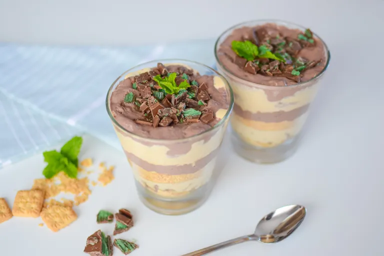

Peppermint Crisp Tart
Prep Time:
120 mins
Yield:
24
Ingredients
1 can caramel
500ml cream
3 peppermint crisp bars
1 packet Tennis biscuits
Steps
Whisk cream until soft peaks form. Add caramel top 'n' fill and mix until combined.
Crush peppermint crisp bars. Fold 3/4 of the bars into the cream mix.
Layer Tennis biscuits at the bottom of a tray. Dollop cream mix over. Repeat with second layer.
Finish with a final layer of cream and sprinkle with remaining peppermint crisp.
Chill overnight, then slice and serve.